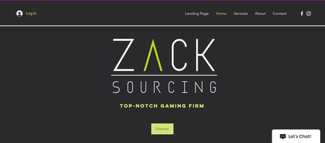
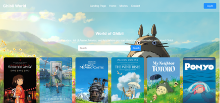
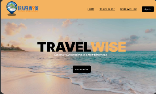

MARIANE JAMIACA V. RILLES
Summary
Anspiring IT professional with a strong foundation in system administration and web development. Currently pursuing a degree in Information Technology at Polytechnic University of the Philippines.
with hands-on experience in Operating Systems and Web Development. Seeking an Internship to leverage my skills in a real-world environmenrt and contribute to innovative tech solutions.
Skills
- Microsoft Software
- Digital and Trditional Art
- Web Development
- Graphic Design
Work Experience
Computer System Servicing NCII
Mindtech | June 2023
- Instal and Configure computer systems.
- Set-up computer networks and servers.
- Maintain and repair computer systems and networks
Programming JAVA NCIII
Joysis Tech Voc INC. | April 2024
- Develop or write codes using personal computer as part of a systems development team.
Picture and Game Character Editor
Present 2024
- Edit and enhance image for promotional materials and in-game use.
Education
Diploma in Information Technology
Polytechnic University of the Philippines | 2nd Year College
WHAT I OFFER
User Interface (UI) Design
- Custom UI Design: Craft visually appealing and brand-consistent interfaces for websites and applications.
- Responsive Design: Ensure the UI looks great and functions well on all devices, including desktops, tablets, and smartphones.
- Prototyping: Develop interactive prototypes to demonstrate the user flow and design concepts before development.
User Experience (UX) Design
- User Research: Conduct user research to understand your target audience, their needs, and pain points.
- Usability Testing: Perform usability testing to identify areas for improvement and ensure a seamless user experience.
- Wireframing: Create wireframes to outline the structure and layout of your website or application.
Portfolio Highlights


